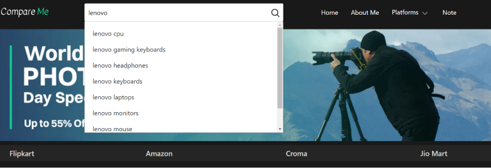
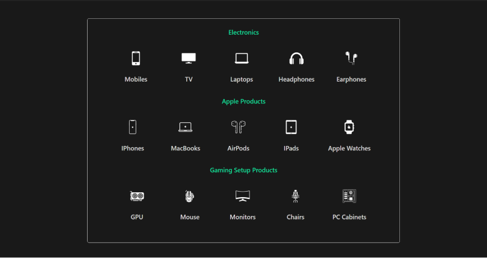
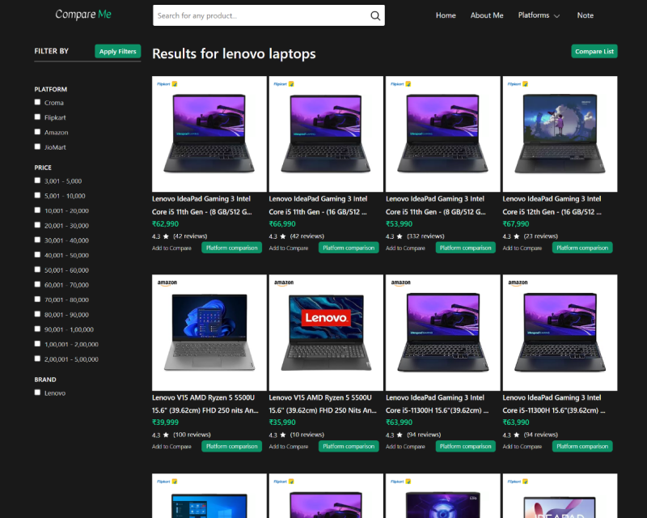
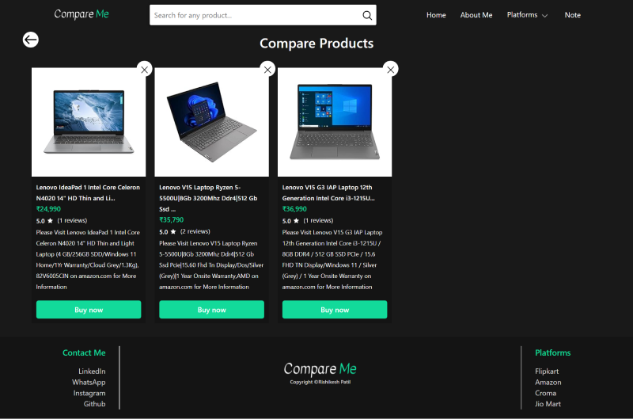
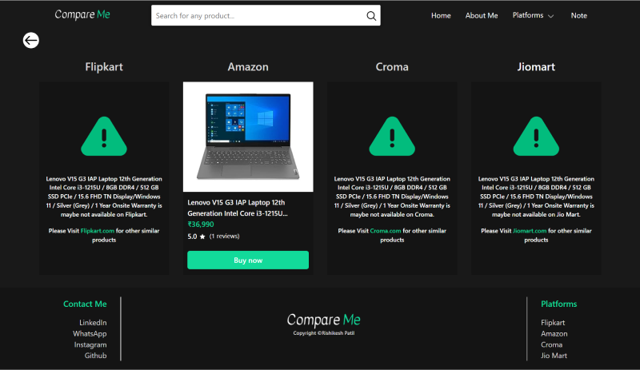

Compare Me Website
Used Languages: Java Spring Boot, MySQL, HTML
and CSS
Introducing a user-friendly website that simplifies online shopping! This platform
enables you to effortlessly compare product prices and specifications from popular e-commerce sites
like Flipkart, Amazon, Croma, and Jiomart. I've simplified the process to save you time and effort
as you look for the best deals and product quality. With a month of dedicated work, I've created a
comprehensive solution, starting with the structuring and design the UI of the webpages and
continuing through the scraping data and coding of the backend and frontend.
To access the project code, Click Here!

The website has an auto-search suggestion function. When a user attempts to search for a
product, the website provides product suggestions to assist the user in their search.
In addition to the search functionality, the homepage offers users a convenient category
section. This feature allows users to easily browse and select product categories, making it effortless
to explore a variety of options without the need for extensive searching. It's a user-friendly feature
designed to enhance the shopping experience.


The website effectively shows user a list of products after a search. Each page displays up
to 40 products, thoughtfully organized by user ratings. To further enhance the shopping experience,
users will find a comprehensive filter option list on the left side of the page.
Within the filter list, users can refine their search results by specifying price range, the platform
from which they prefer to make the purchase, and even select their preferred brand from a list of
available products. This feature empowers users to tailor their search results to match their specific
preferences, making the online shopping experience more personalized and efficient.
Each product on the website comes with two valuable buttons: Add to Compare & Platform Comparison.
'Add to Compare': By clicking this button, the product is added to a list that allows you to
compare up to five different products based on their price and specifications. This feature can be
accessed on the 'Compare Products' page, providing users with a quick and easy way to make informed
choices.


'Platform Comparison': By clicking on this button, users can access a dedicated 'Platform
Compare' page. Here, they can view the prices of a single product across various platforms such as
Flipkart, Amazon, Croma, and Jio Mart. This invaluable tool empowers users to find the best deal for
their desired product from multiple online retailers.
Final Output